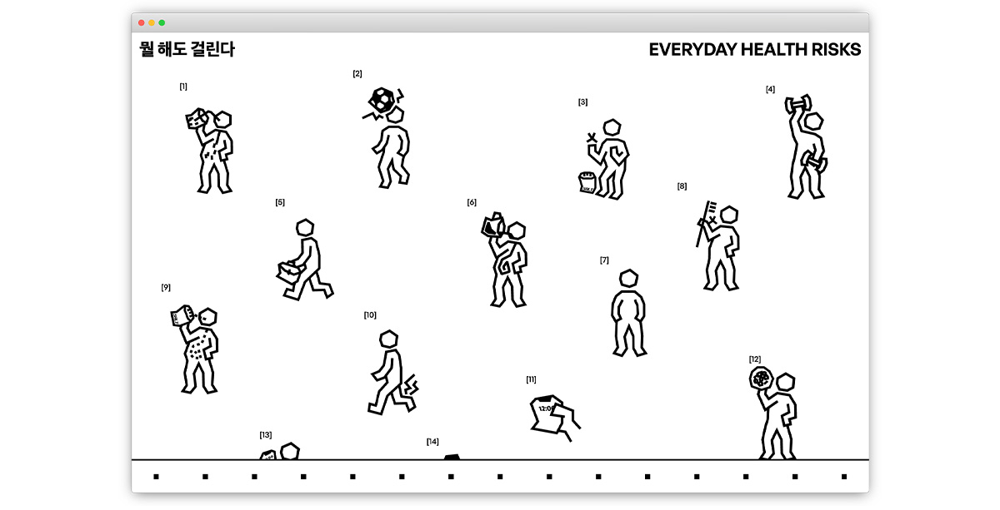
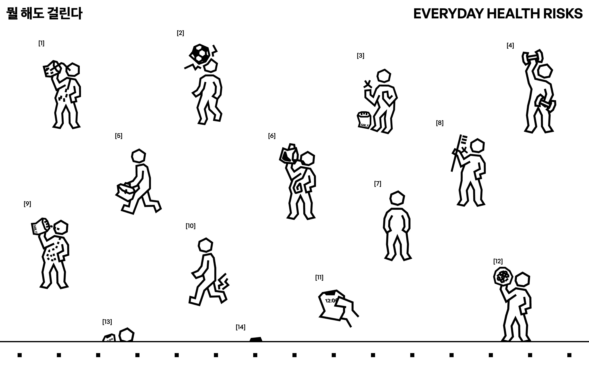
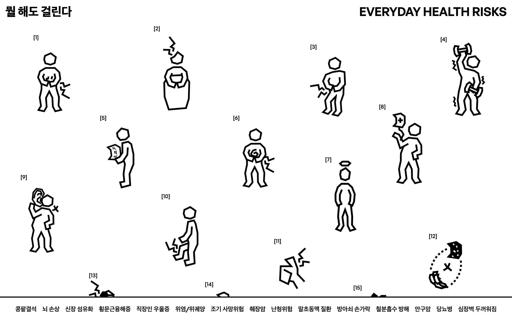
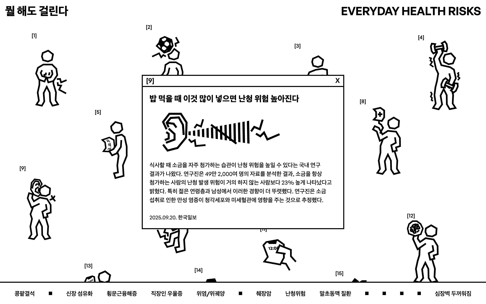
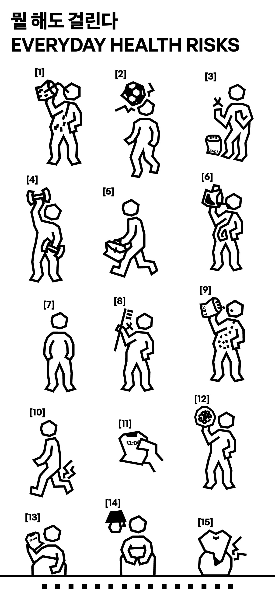
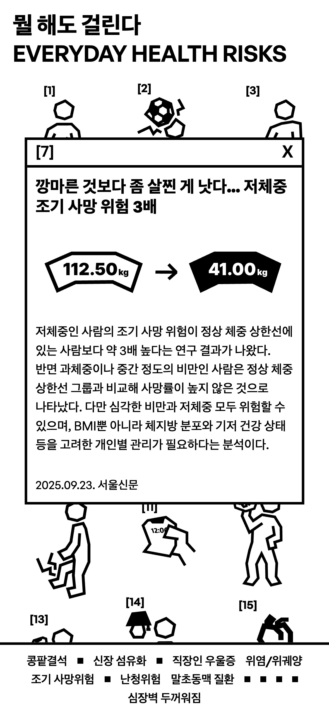
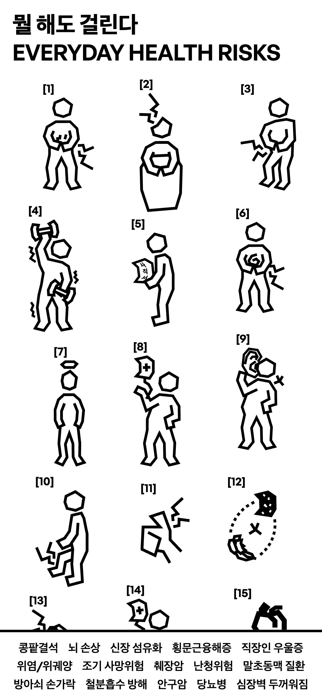

PUBLISHING
HTML · CSS · JavaScript · PC · Mobile
건강 정보에 과도하게 노출되는 일상을 인터랙티브 웹으로 풀어낸 프로젝트
HTML · CSS · JavaScript · PC · Mobile

[뭘 해도 걸린다]는 일상적인 행동을 질병과 연결하는 건강 기사를 수집하고 과도한 건강 정보가 만들어내는 불안을 시각화한 웹 인터랙티브 프로젝트
평범한 일상 속 행동을 질병과 연결하는 건강 기사를 소재로 ‘무엇을 해도 병에 걸릴 수 있다’는 과도한 건강 정보를 경험하게 한다.
일상 속 행동을 단순화한 그래픽으로 표현하고 기사 확인 전후의 이미지를 변화시켜 행동의 의미가 뒤집히는 과정을 보여준다.


행동 아이콘을 선택해 관련 기사를 확인하면 그래픽이 변화하고 선택한 행동에 따른 질병 정보가 누적된다.



